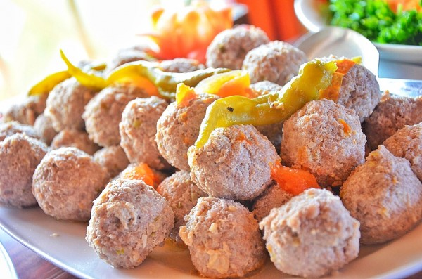
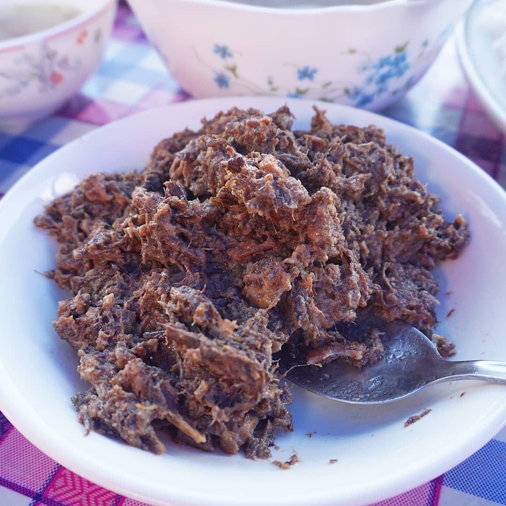
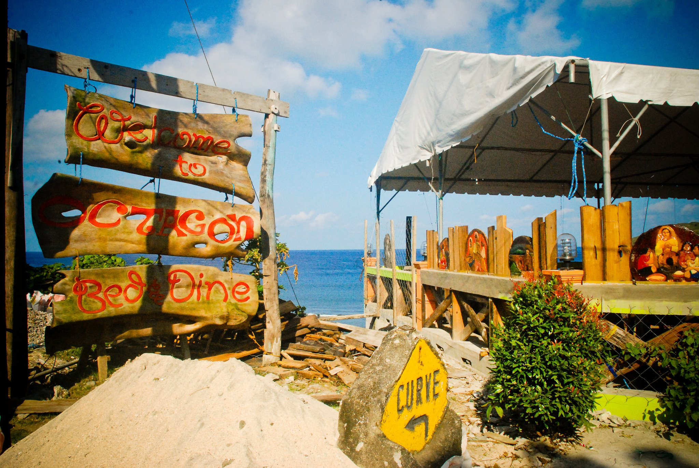

Unlike other destinations in the Philippines like Ilocos, Bicol, Cebu, and Iloilo that have distinct local cuisine, Batanes is not known as a food destination. Still, there are many local dishes here, the majority of which are seafood, that are surprising food finds and must-tries.
Batanes has its own unique way of limiting plastic waste. They serve traditional dishes wrapped in vunung or breadfruit tree leaves and the experience is a must-try.
This practice can also be observed in neighboring countries such as Malaysia, Singapore, and Indonesia. In Batanes, there are many restaurants and eateries that use vunung leaves as paper plates.
RECOMMENDED FOODS
There are only a few restaurants in Batanes, but that shouldn’t stop you from having filling meals especially with unique dishes in the province. Here are some must-try dishes that are staples in Batanes restaurants or homestay kitchens.
- UVUD
- VUNES
- Luñis or Luniz
- Mahi-mahi
- Dibang
-
Also known as the flying fish because it “flies” across the water when you try to catch it
this Batanes delicacy is worth trying. You can eat it kilawin-style (similar to ceviche), or dried and salted.
Its dried version is also a great take-home food souvenir.
- Payi
Lobster is usually expensive, but not in Batanes! Called payi by the locals, you can have a huge serving all to yourself at the fraction of the Manila price.
You can eat lobster here every single day and it won’t cost you your life’s savings.
Some of the luxury and mid-range Batanes resorts have steamed lobsters on their menu. Other seafood that you should try in Batanes are Kanañis (octopus), uni (sea urchin), and dumay (sea snail) which are also served in restaurants and hotels across the province.
This dish is made from grated banana heart or banana stalks mixed with ground meat and minced fish.
It is normally served in meatball form but some restaurants and eateries wrap the uvud in leaves and steam them.

There are also vegetarian versions of uvud but both are served with sauce.
Batanes also has its own version of Bicol’s famous laing, called vunes.
It is made of preserved gabi (taro) leaves and stalks cooked with cream, garlic, pork and patola (sponge gourd).

These are usually served in homestays and local restaurants in Batanes with rice.
Batanes also has its own spin on the classic Filipino adobo, called luñis. It looks different than your usual dark and usually wet adobo.
Luñis/Luniz is made with pork and rock salt, cooked low and slow until the pork’s fat is rendered and the meat turns golden brown, where it gets its color.
They don’t add soy sauce that’s why the luñis/luniz is paler and drier. Luñis/Luniz is eaten best dipped in vinegar and paired with rice.
At the Diura Fishing Village, make sure to try the dried mahi-mahi, which is one of the staple foods across the islands.
The Mahi-mahi or “dorado” has a golden exterior mixed with green and blue hues.
Harvesting this type of fish, which is sometimes called the arayu, is part of the age-old kapayvanuvanua ritual in the fishing village of Diura.
Even in today’s modern times, the Ivatans still practice this ritual to help ensure a bountiful harvest every year. The mahi-mahi is dried in the sun for preservation purposes.
RESTAURANTS
- Octagon Bed and Dine
Octagon Bed and Dine started out as a simple octagon shaped restaurant serving local Ivatan cuisine and Batanes' own take of the favorite Filipino dishes.

It also has an outdoor deck area with an excellent view of the West Philippine Sea

the Naidi hills lighthouse, and the Basco port where one can have a truly memorable Batanes style al fresco dining experience.